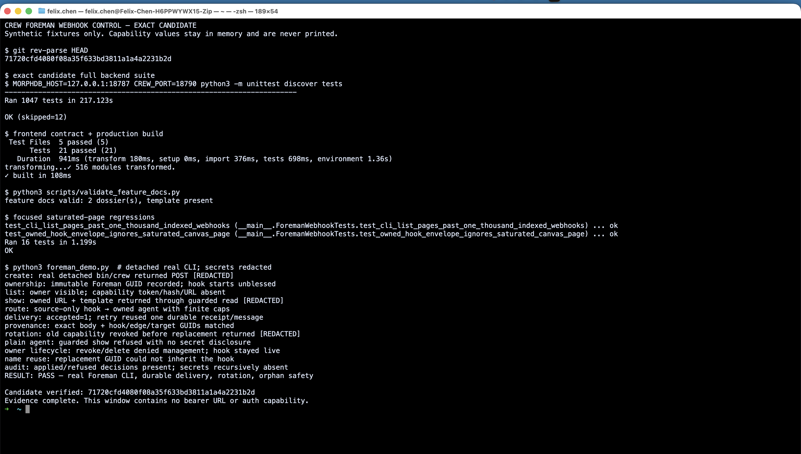

crew webhook create
The managed CLI resolves the live caller, not a caller-supplied name.
Webhook control becomes one more bounded graph-building power: useful enough to build an autonomous workflow, constrained enough that names, races, and audit logs cannot become capability leaks.
crew webhook create
The managed CLI resolves the live caller, not a caller-supplied name.
Guard checks the active Foreman flag, immutable owner GUID, and live hook quota.
An unblessed source node connects only to an owned agent through finite limits.
An external POST enters the existing durable message path. The human can review and bless it.
71720cfd4080f08a35f633bd3811a1a4a2231b2d passed
1,047 backend tests, 21 frontend tests, the production build, dossier
validation, saturated-page regressions, and a real detached
bin/crew flow. The live evidence proves durable delivery,
replay, capability rotation, immutable owner denial, orphan
continuity, complete indexed listing, and secret-free audits.
